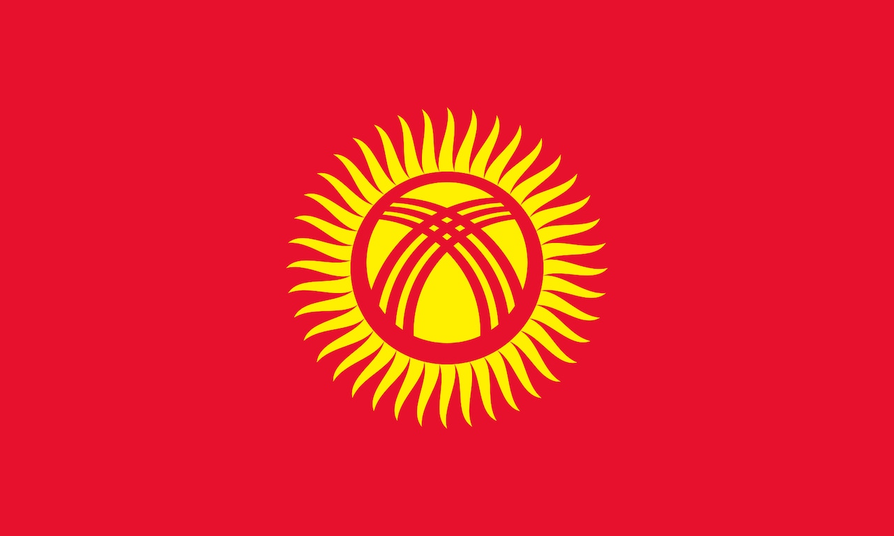

The eponymous hero of the Epic of Manas, a poem of which the longest version extends to a truly epic 500,000 lines, is celebrated in many ways. There are statues of him, roads, a university, a planet (yep) and an airport named after him, and an opera about him. The poem is reputed to be 1,000 years old, but most experts believe it actually originated in the 18th century.
Proper nouns aren’t allowed in Scrabble. But it they were, Kyrgyzstan would score 30 points. Of all the countries made up of just one word, only Mozambique could top it.
“Kyrgyz” is thought to be derived from the Turkic word for “forty” – a reference to the 40 clans of the great Manas. The country’s flag, a nod to this, features a 40-ray sun.
There are just 29.5 residents for each square kilometre of land – making Kyrgyzstan one of the world’s least crowded countries.
The mountainous Tian Shan region covers 80 per cent of Kyrgyzstan and the country has even been described as the “Switzerland of Central Asia”. Its highest point is Jengish Chokusu, at 7,439 m (24,406 ft).
Kyrgyzstan is one of 45 landlocked countries, but does have the consolation of Issyk-Kul, the world’s second largest high-altitude lake (behind Titicaca in South America). It is 113 miles long, 37 miles wide and reaches a depth of 668 metres (2,192 feet). The lake was a popular holiday resort during the Soviet era.
The South Inylchek Glacier is the sixth largest in the world, not including those found in polar regions. Straddling the countries border with China (the only neighbour to Kyrgyzstan that doesn’t end in the suffix “stan”), it is 37.6 miles long.
Bishkek is a city of vast plazas and dramatic monuments – though the statue of Lenin that once graced Ala-Too Square was moved to a less conspicuous location in 2003, and replaced altogether in 2011 (by, you guessed it, a statue of that man Manas).
Kumyz, fermented mare’s milk, is drunk with great gusto in the steppes of Kyrgyzstan. Horse meat is also traditionally popular.
Ever seen a three pound coin or a three dollar bill? Kyrgyzstan is one of the few countries to have used this denomination.
Click here to go to top of the page